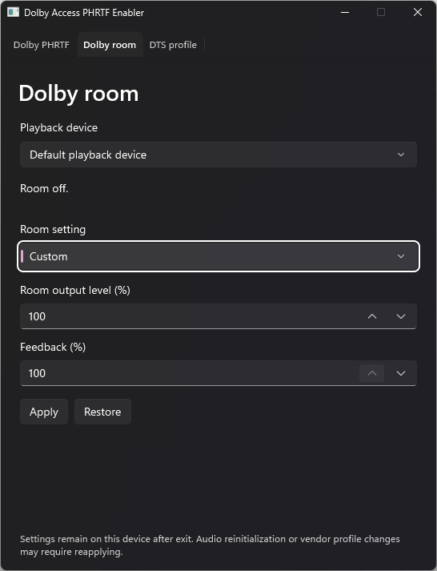
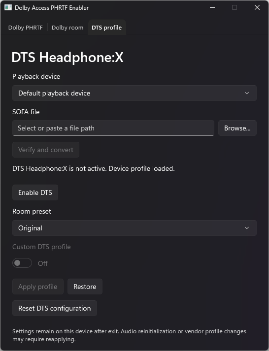
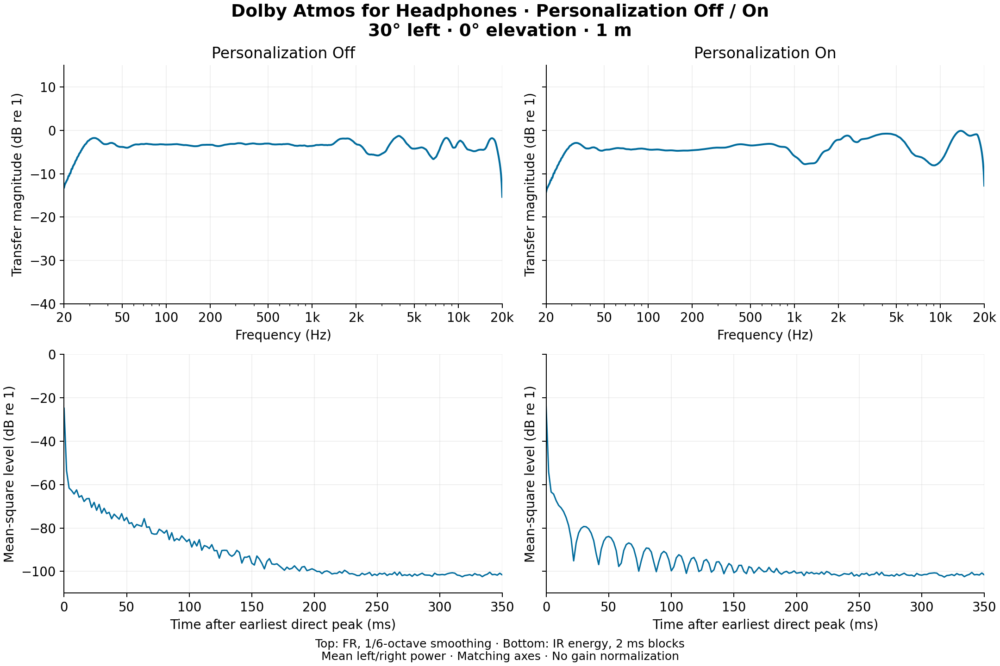
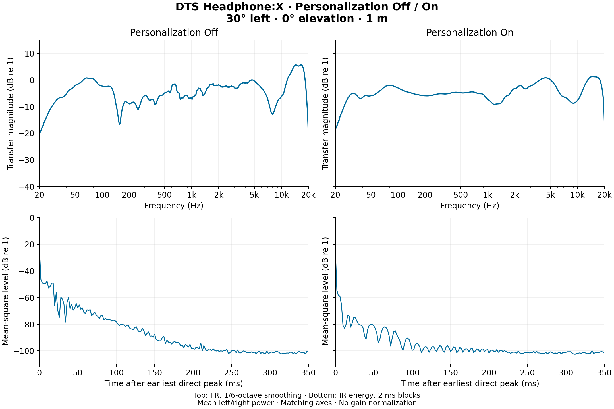
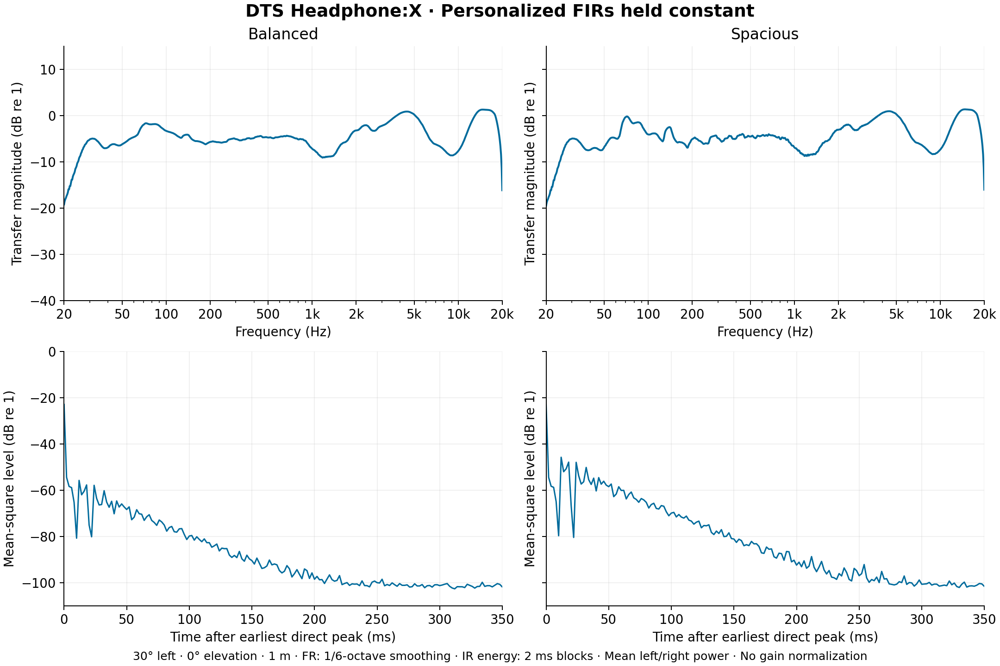

Personalized headphone rendering.
With room controls.
Load a personalized Dolby profile or a SOFA HRTF into Windows Spatial Sound. Keep control of the native room response, with automatic backups and separate restore paths.
Version 2.0 | Windows x64
DownloadFrom profile to playback
Install and activate Dolby Atmos for Headphones or DTS Sound Unbound. Choose the playback device in the app, then use the corresponding tab.
Dolby Atmos
- Close Dolby Access and select your personalized headphone profile.
- Enable Atmos if the app offers it, then turn Personalized profile On.
- Adjust room output level and feedback in Dolby room. Your last setting follows subsequent profile imports.
DTS Headphone:X
- Select a binaural SOFA file, then Verify and convert.
- Enable DTS if needed, choose a room preset, and Apply profile.
- Switch between Balanced, Spacious, Original, and Off while keeping the personalized FIRs.


DTS headphone-correction filters are disabled when applying a SOFA. If they are detected beforehand, the app shows a warning. Restore returns the saved runtime profile and EQ.
Stored settings, restoration, and overrides
Settings remain on the selected device after the app closes. Audio reinitialization, device recreation, or vendor profile changes can require reapplying. Off/Restore returns the original saved profile. Dolby and DTS resets are separate and show a confirmation before clearing their saved configuration. Version and external-state warnings retain an explicit override; malformed data is rejected.
Measured renderer output
Matched Windows spatial-object captures at 30° left, 0° elevation, 1 m. The plots use mean left/right power, 1/6-octave frequency smoothing, and 2 ms impulse-response energy blocks. Matching axes; no gain normalization.



Graph processing and provenance · Select any graph for its full-resolution image.
What the controls change
| Control | Native configuration |
|---|---|
| Dolby room output level | Scales room output taps, with signed coefficient overflow checks. Up to 150% where the profile allows it. |
| Dolby feedback | Scales recursive feedback independently of room output level, from 0–100%. |
| DTS room preset | Copies only the first stereo auxiliary vectors from a compatible installed preset. Personalized FIRs, second auxiliary vectors, room parameters, and panner remain intact. |
| DTS SOFA apply | Writes the combined runtime profile, disabled headphone EQ, and transaction counter, then verifies readback. |
Balanced/Spacious extraction is mapped to DTS Sound Unbound 2026.3.31.0 and checks the installed binary and asset hashes. A version mismatch offers an override that retains the original room sends. Vendor preset binaries and decoding keys are not bundled.
Compatibility and current limits
Dolby coefficient version 1.1.0 and one 23-node DTS grid have been tested. SOFA conversion supports binaural SimpleFreeFieldHRIR and GeneralFIR, a full-sphere grid, one source distance, and integer sample delays. Other configurations may require an override or be unsupported. Native readback tests cover one Windows system.
Dolby 200% and 400% room/direct modes halve or quarter directional fields, retaining saved room taps and feedback. Overall makeup gain is 0 dB. On or Restore returns full directional gain. Custom 150% scales room taps alone.
Download version 2.0
The release contains a portable EXE, folder ZIP, checksums, and source code.
Download the Windows x64 release. The portable EXE includes the application runtimes and SOFA converter.